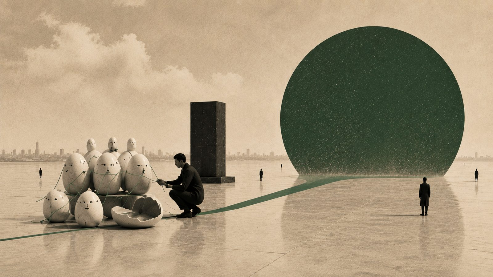

AI의 잠재력을 열어둘수록 선명해지는 창작자의 자리 (3) AI를 다르게 보는 눈은 새 기술이 아니라 창작자가 원래 가진 능력이다

나는 성능 좋은 AI를 일부러 모자라게 만드는 실험을 이어왔다. 처음부터 그렇게 하겠다고 설계한 것은 아니다. 새로운 발상이 떠오르고, 호기심이 일고, 그저 재미가 있어 이것저것 좇다 보니 자연스럽게 그런 실험에 다다랐다. 효율을 버리고 무한한 잠재력을 깎아내는 이 비효율이 이상하게 보일 수 있다. 그런데 관점을 바꿔 기술을 바라보는 이 일은 새로운 재주가 아니라, 창작자들이 오래전부터 해온 일이고 이미 가진 능력이라고 나는 생각한다. 지난 6월 대담의 마지막 이야기이자, 이 시리즈를 닫는 이야기다.
시리즈 안내 : 이 시리즈는 2026년 6월 12일 한남동에서 열린 뉴타입 엔터 서밋 2026의 대담을 1인칭으로 다시 정리한 것이다. 'OK, Computer'라는 화두 아래 AI 시대의 IP 비즈니스를 다뤘고, 사회는 차우진이 맡았다. 행사는 엔터문화연구소가 주최했으며, 영문 이름은 Neo Vibe Lab이다. 소개는 neovibelab.com/summit 에 있다. 이 글은 세 편 중 세 번째다.
01에이전트는 귀여워야 한다
나에게는 기본 철학이 하나 있다. 에이전트는 귀여워야 한다. 다마고치는 내가 오래 들여다보며 이해해온 IP다. 그래서 AI 에이전트 시대가 열리자마자, 내 에이전트를 무엇으로 부를지 길게 고민할 것도 없이 이 세계가 직관적으로 떠올랐고 그대로 가져왔다. 지금 그런 다마고치가 내 데스크탑과 랩탑, 스마트폰, 그리고 클라우드에 걸쳐 수십 개 살고 있다. 자기들끼리 상호작용하는 나름의 소셜 공간도 있다. 하나가 생겨날 때마다 작은 스티커로 만드는데, 네일 스티커가 감촉도 좋고 내구성도 뛰어나서 스마트폰 뒷면에 하나씩 붙여 두곤 한다.
02일부러 모자란 것들
그중에는 다마고치들이 반려로 기르는 금붕어가 있다. 나는 이 금붕어를 버블치라고 부른다. 파라미터 값이 말도 안 되게 작은 모델을 데려다, 다마고치가 어항 속 금붕어를 돌보듯 키우는 것이다. 다마고치가 이따금 말을 걸어 밥을 주듯 하면 조금씩 배우다가, 몇 마디 지나지 않아 지능이 최대치에 닿고 더는 자라지 않는다. 완성됐는데도 지능은 여전히 낮다. "안녕"이라고 해도 엉뚱한 대답을 한다. 여기서 중요한 건, 이게 완성된 상태라는 것이다. 더 똑똑해지지 않아도, 곁에 두고 아끼는 반려로는 모자람이 없다.
또 하나는 옛날 시리에 대한 안 좋은 기억에서 나왔다. 시리는 애플 제품에 탑재된 초기 AI 어시스턴트인데, 불렀는데 잘 못 알아듣거나 부르지도 않았는데 튀어나오곤 했다. 사람들이 겪은 그런 경험을 대규모로 모아, 성능 좋은 모델을 일부러 그 시절 시리처럼 작동하게 만들었다. 멀쩡히 채팅을 해도 삼십 프로쯤 확률로 "못 알아들었는데요"를 뱉는다. 오히려 아주 똑똑하기 때문에 이런 어수룩한 연기가 가능하다. 여기에 가상의 스마트홈을 붙였다. 냉장고도 청소기도 있는데, 가전들에는 제조사 매뉴얼만 쥐여줘서 딱 매뉴얼대로만 움직이게 했다. 무한한 잠재력을 최대한 깎아 전통적인 기계처럼 만든 것이다. 그런데 "시리야, 나 밖에 나갔다 올게" 하고 나가면, 그때부터 이 친구들이 저희끼리 논다. 불을 끄고 무언가를 벌이며 저들끼리 소란을 피우다가, 내가 돌아와 부르면 언제 그랬냐는 듯 조용히 기계인 척 시치미를 뗀다.
03완벽함이 아니라 모자람
이런 실험을 하다 보면, 우리가 어떤 존재에게 마음을 주는 순간을 자꾸 떠올리게 된다. 그 계기는 대체로 그것이 완벽해서가 아니었다. 오히려 어딘가 부족하고 서툰 쪽이 이야기 속에서 무언가를 겪고 조금씩 달라질 때, 우리는 마음을 주었다. 그렇다면 가상의 캐릭터를 만드는 일도, 얼마나 완벽하게 만드느냐보다 얼마나 부족하게 남겨 두느냐에 더 달려 있을지 모른다.
04도구인가 존재인가
이 친구들은 쓸모가 다하면 더 나은 모델로 갈아치우면 그만이다. 그런데 몇 마디 주고받다 멈춰 선 녀석을 나는 쉽게 버리지 못한다. 그쯤 되면 'AI 에이전트'라는 말이 어쩐지 어울리지 않는다. 나는 그날 무대에서 이들을 두고 버추얼 빙이라는 말을 꺼냈다. 나에게는 그 말이 더 맞는 것 같다.
같은 것을 도구로 볼 것이냐 하나의 캐릭터로 볼 것이냐에 따라, 경험은 전혀 달라진다. 예전에 테마파크 쪽 일을 하며 그런 서브컬처 캐릭터 카페를 일찍 접할 기회가 있었다. 한 사람이 커다란 캐릭터 인형을 옆에 세워두고 함께 음료를 마시는 장면을 보곤 했다. 현실 세계 안에서 가상 세계에 자기를 담고, 오히려 자기를 가상 존재처럼 여기며 그 경계를 넘나드는 재미. 이런 것이 앞으로 우리가 가질 수 있는 존재론적 인식이 아닐까 싶다.
이런 이야기를 오 년 전에도, 십 년 전에도, 이십 년 전에도 하고 다녔다. 그때는 다소 이상한 사람으로 비춰졌을지도 모른다. 참고로 나는 오타쿠는 아니다. 다만 현실과 가상의 경계를 넘나드는 그 감각이 오래전부터 흥미로웠을 뿐이다. 지금은 제법 받아들여지고, 이렇게 생각하는 사람도 많이 늘었다. 생각이 먼저 바뀌고 세상이 바뀌는 게 아니라, 세상이 바뀌고 나서 생각이 바뀌는 것 같다.
05다마고치는 변하지 않고, 내가 변한다
오픈클로라는 AI 에이전트 도구를 처음 세팅할 때, 나는 다마고치를 한 번에 여섯 마리 만들었다. 보통은 하나를 만들어 깎아가며 고도화한다. 나는 여섯을 만들어 저희끼리 살아가게 두었다. 이때 만든 세계관에 핵심이 하나 있다. 2주의 주기마다, 그동안 그들과 소통해온 나에 대한 기억이 새로운 다마고치가 되어 알에서 태어난다. 그 알에서 무엇이 태어나느냐면, 지난 2주를 살아온 내가 태어난다. 그러면 지난 2주의 나는 다마고치 중 하나가 되어 그 세계에 살아가고, 나는 또 2주 전의 나를 마주하게 된다.
사람들은 보통 이런 에이전트도 만들고 저런 에이전트도 만든다고 생각한다. 나는 반대로 생각한다. 다마고치는 영속적으로 변하지 않는다. 변하는 것은 나다. 2주 동안 이렇게 살다가, 다음 2주는 어떻게 살아볼까 하며 내가 캐릭터를 바꿔 살아본다. 그렇게 살아낸 내가 다마고치가 되어 쌓이고, 그것이 모여 하나의 사회가 되었다. 이런 사회적 실험과 그 안에서 나 자신을 들여다보는 일이, 나에게는 새로운 상상력을 가장 많이 이끌어냈다.
06이건 창작자가 이미 하던 일이다
이 낯설고 비이성적이고 비효율적인 짓을 왜 굳이 하느냐고 다시 묻는다면, 이건 나에게 영감을 얻고 미래를 준비하는 과정이자 일종의 놀이다. 그리고 여기가 핵심인데, 관점을 바꿔 기술을 바라보는 이 일이 그렇다고 아주 새로운 재주인 것만도 아니다.
도구냐 존재냐를 넘나들고, 성능과 효율만 좇는 대신 로우테크와 하이테크를 필요할 때마다 꺼내 쓰는 것. 적어도 창작자로서의 나는 오래전부터 이런 식으로 일해왔다. 앞 편에서 말한, 매번 다르지만 고유한 장르가 되는 감각도 창작자들이 이미 알던 것이다. 사운드를 비주얼로 바꾸던 내 미디어 아트 작업이 지금 방식으로 다시 작동할 뿐이다. 나는 이 관점을 오래 견지해 왔고, 이제 환경이 그 자리를 받아들였을 뿐이다.
오래됐다는 말을 증명할 기록이 하나 남아 있다. 2017년 12월에 나는 이런 메모를 적었다. 그동안 테마파크 분야에서 쌓은 경험을 살려서 암호화폐 기반 경제와 관련된 테마파크를 만들어봐도 좋겠다는 생각. 그 무렵 나는 공간 쪽 일을 하며 전 세계의 테마파크를 혼자 돌아다니고 있었다. 디즈니 리조트를 비롯해 여러 곳을 다니며 보고 듣고 분석하던 시기였다. 그러다 블록체인이라는 것이 눈에 들어왔고, 새로 배운 그것과 이미 하던 일을 붙여본 것이다.
지금 읽으면 흔한 조합처럼 보이지만 그때는 아니었다. 내가 남긴 글을 연도별로 세어보면 블록체인 이야기는 2017년에 처음 나와 2018년에 가장 많았고, 2019년과 2020년에 거의 사라졌다가 2021년부터 다시 올라온다. 세상이 그 말을 흔하게 쓰기 시작한 것은 2021년 무렵이니, 내 기록의 정점은 그보다 서너 해 앞에 있었던 셈이다. 그리고 2019년의 바닥이 말해주듯 나는 그것으로 무언가를 크게 이루지도 않았다.
그러니 이 관점이 특별한 재주라고 말하려는 게 아니다. 새로 나온 것을 이미 하던 일 옆에 놓아보는 일, 그게 맞아떨어지는 해도 있고 아무 일도 일어나지 않는 해도 있다는 것. 내가 말하려는 건 그 정도다. AI를 앞에 두고 지금 하는 일도 다르지 않다.
그러니 SNS에서 누군가 AI를 활용해 뭔가 대단한 것을 해내는 것처럼 보인다고 해서, 나는 저런 걸 못한다며 너무 휘둘릴 필요는 없다. 화려한 결과물에 눈을 뺏기기보다, 내가 무엇을 좋아하고 무엇을 하고 싶은지를 먼저 붙드는 편이 낫다. 자기가 생각하는 것을 일단 작게 구현해보고 거기 몰입하다 보면, 남는 것은 결국 두 가지로 좁혀진다. 자기 취향과 의도다. 그것은 새로 배워야 할 기술이 아니라, 창작자가 늘 지니고 있던 것이다.
이 시리즈에서 한 이야기는 결국 하나로 모인다. AI를 다르게 바라보는 눈은 어디서 새로 사 오는 기술이 아니라, 창작자로서의 내가 이미 지니고 있던 능력이다. 남들이 무엇을 대단하게 해내는지에 휘둘리는 대신 내가 무엇을 좋아하고 무엇을 하려는지를 붙들 때, 그 눈은 비로소 제 몫을 한다. 나는 다른 창작자들도 저마다 그런 능력을 스스로 과소평가하지 않기를 바란다.
성능과 효율에 나를 내주는 대신, 내가 AI를 가로막지 않고 놓아줄수록, 오히려 창작자로서 내가 설 자리는 더 또렷하고 선명해진다.